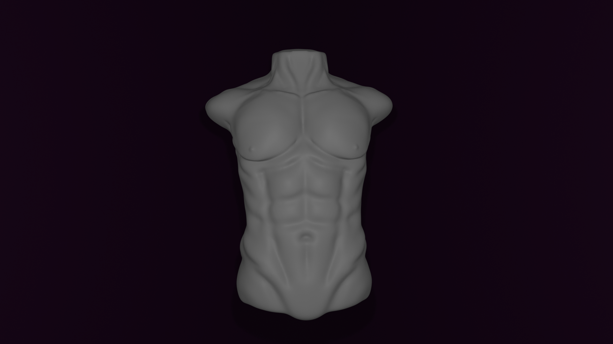
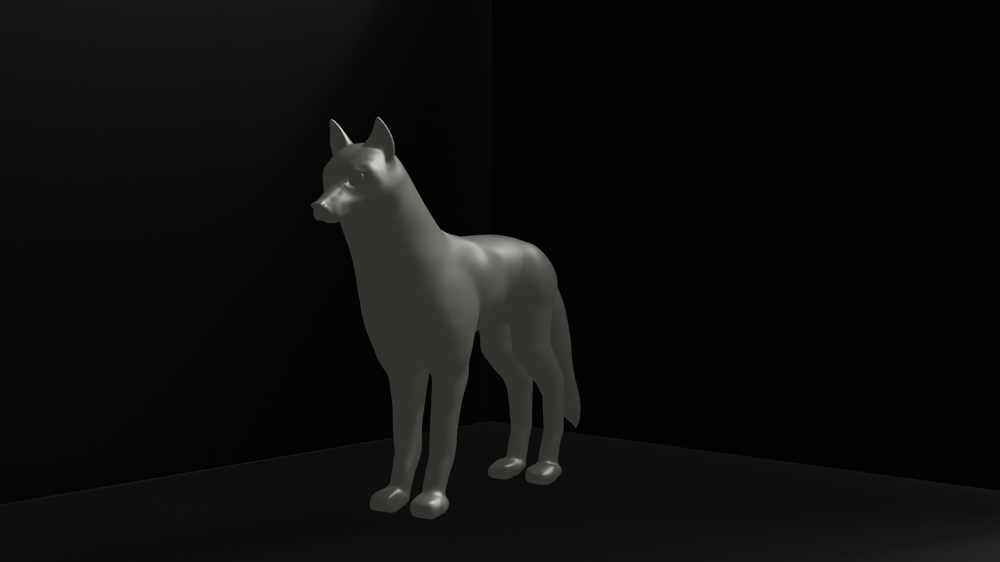
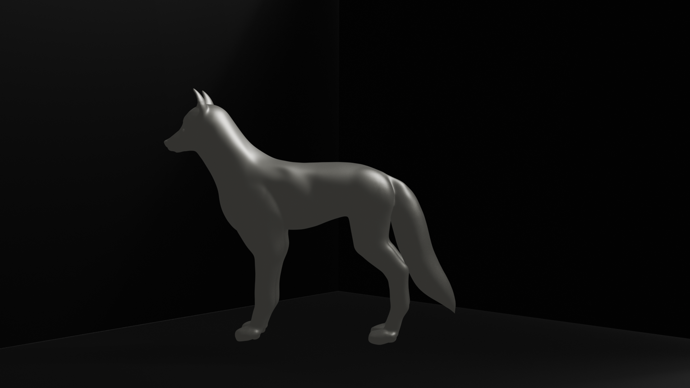
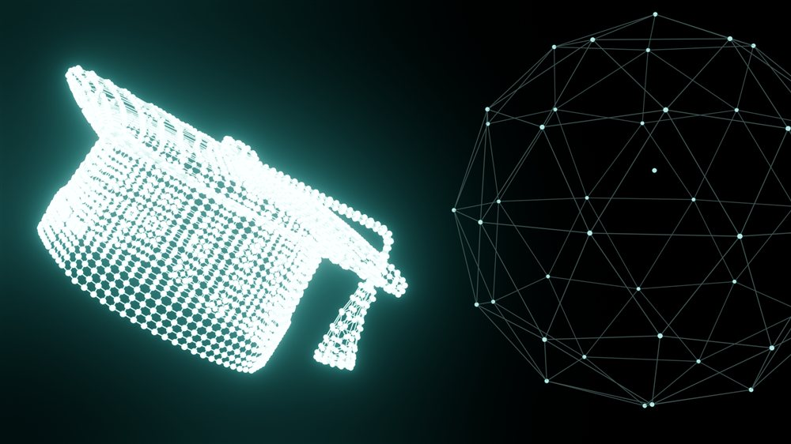
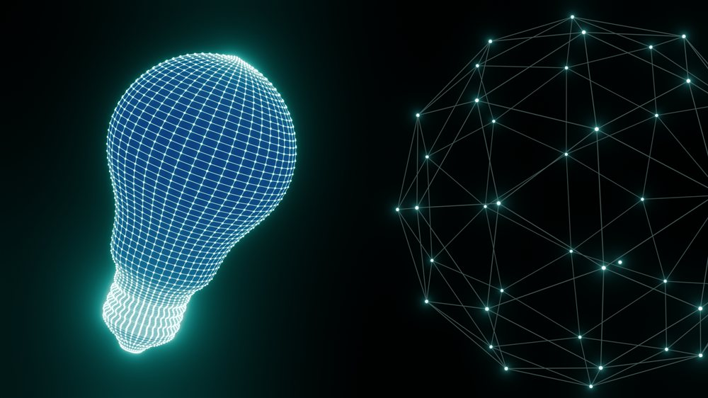
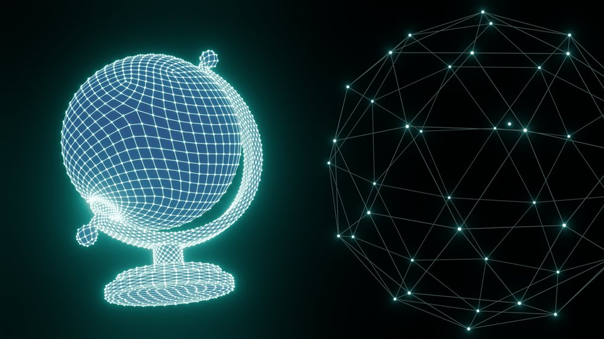
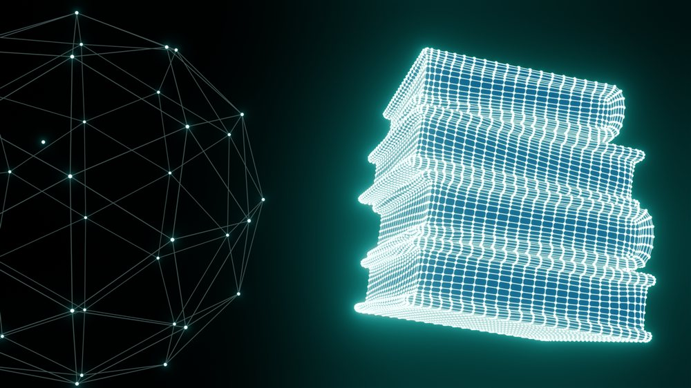
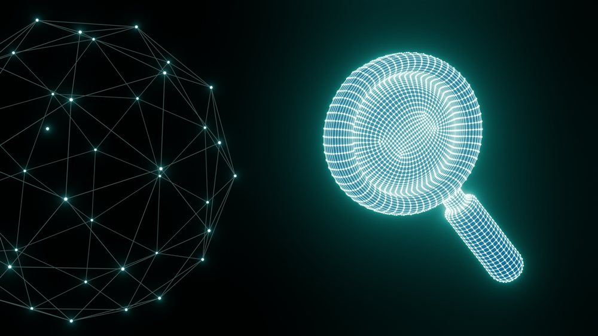

PROYECTOS
02 / 05
3D
Ideas en tres dimensiones
Modelo, texturizo y doy vida a ideas a través del 3D, creando objetos, personajes y espacios que pueden existir más allá de la pantalla.
Dirección: forma, textura y luz trabajadas hasta que la escultura digital se sostiene sola.
Estudio anatómico

Escultura de criatura


Íconos 3D




